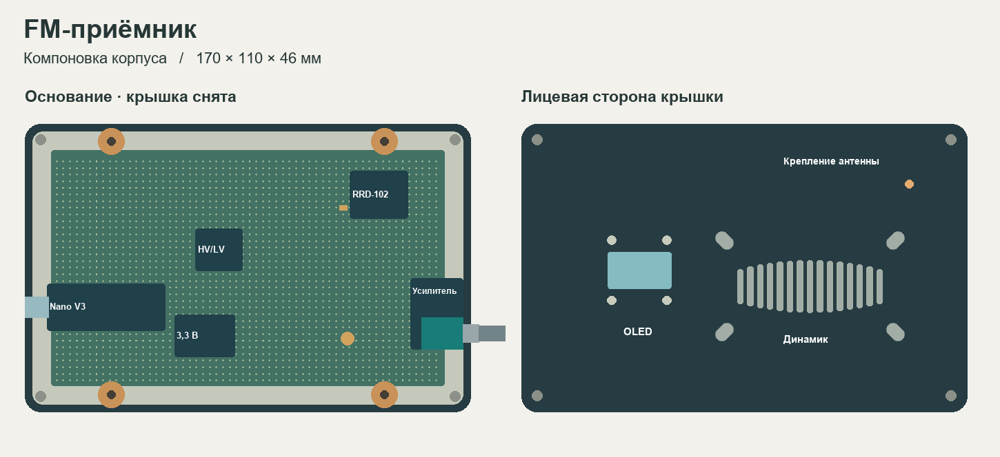

Макетная плата 150 × 90 мм, Arduino Nano V3, RRD‑102 V2.0, OLED I²C и один динамик 8 Ом.
Полная схема пайки с координатами отверстий и развязкой питания

Вид со стороны деталей, USB смотрит влево. На макетке закрепи Nano, модуль стабилизатора 3,3 В, преобразователь уровней и радиомодуль. Усилитель держится гайкой регулятора в правой стенке. Дисплей, динамик и антенна крепятся к крышке и подключаются гибкими проводами.
На макетке с отдельными площадками каждое отверстие — отдельная точка. Проверь это прозвонкой двух соседних площадок. Установи модули на штырях, оставь свободными места, где корпус прижимает плату, и спаяй соединения изолированными перемычками со стороны дорожек. При перевороте платы ориентируйся по подписанным контактам, потому что вид зеркалится. Положение модулей на сетке 2,54 мм выбирай по их фактическим штырям.
Координатная сетка фактической платы, 53 × 33 отверстия
Сделай три отдельные шины из провода внизу макетки. Красная — питание от вывода 5V Nano, чёрная — GND, оранжевая — выход стабилизатора 3,3 В. Каждая строка ниже — одна электрическая цепь. Все контакты в одной строке должны прозваниваться между собой.
| Провод | Соединить пайкой |
|---|---|
| Красный · питание | Nano 5V ↔ преобразователь HV ↔ стабилизатор IN ↔ усилитель Power+ ↔ плюс C2 100 мкФ. |
| Чёрный · общая земля | Nano GND ↔ оба GND преобразователя ↔ стабилизатор GND ↔ радио 6 GND ↔ OLED GND ↔ усилитель Power− и вход G ↔ минус C2 ↔ один вывод C1. |
| Оранжевый · 3,3 В | Стабилизатор OUT ↔ преобразователь LV ↔ радио 5 VCC ↔ OLED VDD ↔ второй вывод C1 100 нФ с маркировкой 104. |
| Синий · данные | Nano A4 ↔ HV1. Отдельная цепь LV1 ↔ радио 1 SDIO ↔ OLED SDA. |
| Зелёный · тактирование | Nano A5 ↔ HV2. Отдельная цепь LV2 ↔ радио 2 SCLK ↔ OLED SCK. |
| Белый · звук | Радио 7 LOUT ↔ вход L усилителя в группе L G R. В скетче предусмотрен монорежим тюнера. |
| Антенна | Радио 10 ANT ↔ короткий провод к кольцевому контакту под металлическим винтом антенны. |
| Два провода динамика | Выход усилителя Lout+ ↔ плюс динамика. Выход усилителя Lout− ↔ минус динамика. Оба провода идут только к усилителю. Правый выход и вход R остаются свободными. |
Цвета условные. С твоими красным и серым проводами подпиши концы сигнальных перемычек. C1 ставь как можно ближе к питанию радиомодуля. C2 ставь у подключения питания усилителя. Полоса на электролите C2 обозначает минус.
Вид со стороны микросхемы. Поверни RRD‑102 так, чтобы металлический кварц оказался внизу. Сверь надпись версии на обратной стороне. Номера здесь относятся к краевым площадкам модуля.
левая сторона правая сторона
1 SDIO 10 ANT
2 SCLK 9 · свободно
3 · свободно 8 ROUT · свободно
4 · свободно 7 LOUT
5 VCC 3,3 В 6 GND
└──── кварц ────┘
Подключи краевые площадки через подходящую переходную плату либо короткие тонкие гибкие провода с фиксацией от натяжения. Толстый монтажный провод оставь для шин. При прямой пайке придержи модуль на изолирующей подложке и прозвони соседние площадки на случай перемычек припоя. Распиновка RRD‑102 с видами обеих сторон · Контакты I²C Arduino
HV относится к стороне Nano, LV — к радио и OLED. Проверь, что линии I²C подтянуты к питанию на обеих сторонах преобразователя, если на нём нет штатных подтяжек.Power+ усилителя подтверди его номинальное питание. Обозначение B50K относится к регулятору громкости. Свяжи усилитель с платой гибким жгутом и подпиши обе группы L на разъёмах как вход и выход.Радиомодуль питается от шины 3,3 В. Плюс электролита C2 идёт на питание от Nano, минус на GND. Вывод Lout− усилителя идёт на динамик.